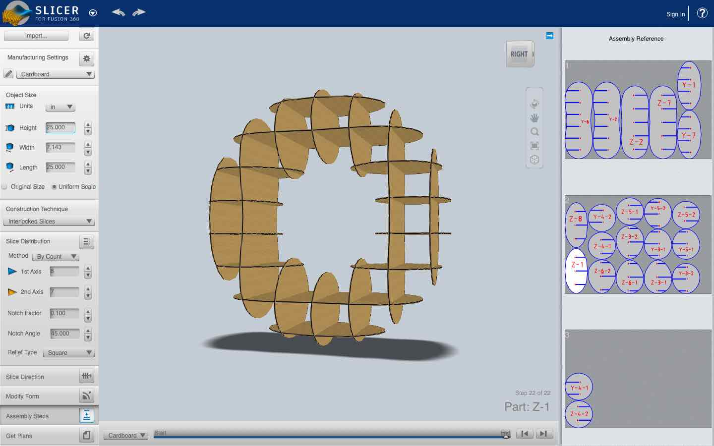
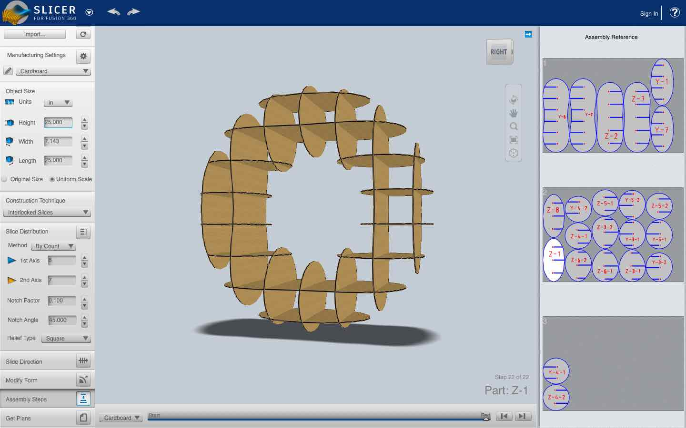
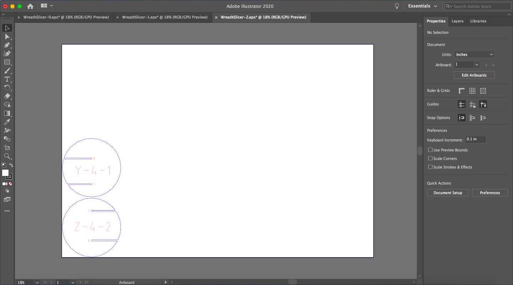
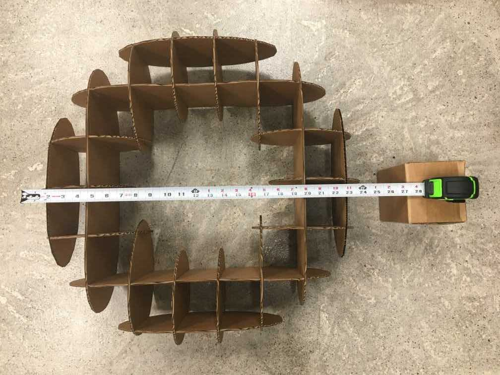

In this assignment I used Slicer for Fusion 360 to create a large cardboard model.
Contents
1) 3D Modeling
2) Using Slicer for Fusion 360
3) Preparing files in Illustrator
4) Assembling my Object
Design Files
3D Modeling
Last week I made a cardboard fruit bowl with Slicer for Fusion 360, but this week I wanted to change up my design to make something that's useful at a 2 ft scale. I decided to make holiday wreath. It was a very simple design to make in Tinkercad. I just used a torus shape and changed the dimensions a bit.
Using Slicer for Fusion 360
Just like last week, I imported my model into the slicing software. Here, I changed the size to have an outer diameter of 25 inches. Also, I inputed the manufactuing settings for my cardboard material.
Like before, I set the Construction Technique to "Interlocked Slices". Then, I played around with the number of slices on each axes to find a balance that I liked visually. I made sure to have at least 12 slices.
Here is what Slicer generated for the vector file and the cardboard rendering.
 

Preparing files in Illustrator
I opened up all of my .eps files in Illustrator. Then, I began nesting them like I did last week.

I had to ungroup each file, then re-group each object in order to move them. After nesting the slices, I was able cut down my material to just two pieces of carboard.
I added a line, to cut off the untouched cardboard.
Next, I placed the text onto a different layer, and changed the stoke width of everything to .01 mm.
Assembling my Object
After testing some laser settings on a piece of cardboard, I cut out my slices on two full sheets.
Once I detached each slice, I laid them all out on the floor and sorted them by size and by whether they were on the Y or Z axis.
When I first started putting the wreath together, I had to refer to the assembly instructions. After a while I figured out a system of putting it together that made sense to me. I joined the four largest slices first. Then, I added the pieces that radiated off of the main four, while making sure that similar peices were placed across from each other. Finally, I added the last few oval slices to the sides.

I hung my wreath up on a door to decorate for the holidays!